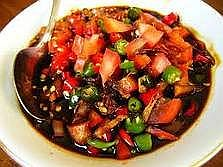

Sambal Kecap

Bahan:
5 cabai merah, diiris
3 cabai rawit, diiris
4 butir bawang merah, diiris
4 sdm kecap manis
1 sdt air jeruk limau
2 biji tomat
Cara Membuat:
Campur semua bahan jadi satu, siap dihidangkan.